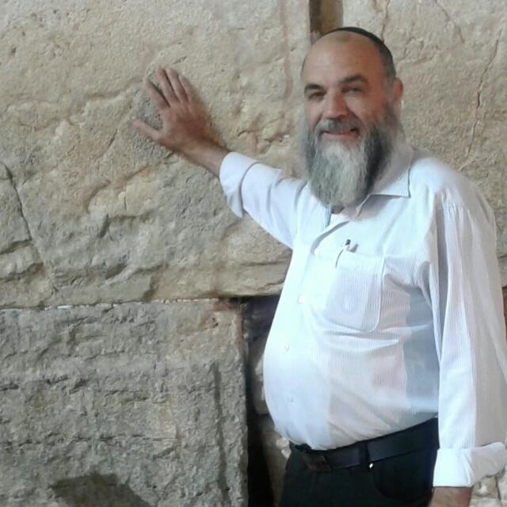

הרש”ג אודות עזיבת אירופה: “ ההגירה צריכה להמשיך באופן בלתי חוקי במידת הצורך” >>
הרש”ג אודות עזיבת אירופה: “ההגירה צריכה להמשיך באופן בלתי חוקי במידת הצורך” >> תשובת הג’וינט: “אתה יכול להיות בטוח כי הג’וינט עושה כל שביכולתו” >> הרב גורודצקי: “אני מייחס חשיבות מיוחדת להקמת מקווה בברינואה” >> פקיד הג’וינט מתאר את סוד כוחו והשפעתו של הרב גורודצקי: “כולנו מלאים הערכה לגדולתו של גורו
הרש”ג אודות עזיבת אירופה: “ההגירה צריכה להמשיך באופן בלתי חוקי במידת הצורך” >> תשובת הג’וינט: “אתה יכול להיות בטוח כי הג’וינט עושה כל שביכולתו” >> הרב גורודצקי: “אני מייחס חשיבות מיוחדת להקמת מקווה בברינואה” >> פקיד הג’וינט מתאר את סוד כוחו והשפעתו של הרב גורודצקי: “כולנו מלאים הערכה לגדולתו של גורודצקי ולמנהיגותו … על ידי התמדה, אישיותו וחכמתו העליונה הוא פיתח פקחות קיצונית ויכולת להתמודד עם אנשי הג’וינט…” >> הצלת הפליטים - פרק שביעי

עבור אלפי חסידי חב”ד שברחו מרוסיה לפולין, סיוע הג’וינט הציל את חייהם, ואפשר להם לשרוד עד שהגיעו לחוף מבטחים. חתנו של אדמו”ר הריי”ץ, הרש”ג, ויחד עמו הרב בנימין גורודצקי היו אחראים על סידור הפליטים, והם עבדו יחד עם הג’וינט.
בפרק השביעי נתמקד בעיקר בסיפור המקווה בברינואה, וכיצד הרב גורודצקי הצליח לקבל את הכספים הדרושים בכדי לבנות את המקווה.
מסמכים מרתקים אלה מופיעים בארכיון הג’וינט (שעבר דיגיטציה ועלה על האינטרנט הודות למענק מד”ר ג’ורג’ט בנט וד”ר ליאונרד פולונסקי). רוב המסמכים בתרגום מאנגלית.
מכתב תודה, הגירה בלתי–חוקית ובעיית הדיור
בט”ז תמוז תש”ז כתב הרש”ג מכתב תודה לד”ר יוסף שוורץ, יו”ר הג’וינט באירופה, ובו הסביר את החשיבות שבעזרה לחסידי חב”ד לעזוב את מחנות העקורים ולהתיישב במקומות טובים יותר:
בשם אגודת חסידי חב”ד ומרכז הישיבות תומכי תמימים ליובאוויטש שאני יו”ר הוועד הפועל ובשם חמי הנערץ, הרבי מליובאוויטש, ברצוני להביע את הערכתי העמוקה והכרתי לעבודה ההומניטרית העצומה שהג’וינט עושה תחת הנהגתך. ראיתי את העבודה הגדולה הזו באופן אישי בביקורי ביבשת אירופה ובמיוחד במחנות העקורים באוסטריה וגרמניה.
בשובי לארצות הברית אמרתי לנציגי העיתונות על העבודה הגדולה הזאת שהג’וינט עושה תחת הנהגתך. וכך עשיתי גם בהתוועדות גדולה שנערכה לכבוד שובי. אני מאמין שזו מצווה גדולה לפרסם את העבודה של הג’וינט באירופה, כך שיהודי ארה”ב יבינו את הדחיפות והחשיבות של עבודה זו ויבינו שצריכים לתת תמיכה רחבה לכך.
מיד לאחר שובי ביקרתי במשרדים הראשיים של הג’וינט בניו יורק, ושם תיארתי את ביקורי באירופה ואת הרושם שקיבלתי במהלך ביקורי במחנות העקורים. יש לעשות הכול כדי להוציא את היהודים מן המחנות. במקום בו זה יכול להיעשות באופן חוקי - זה צריך להיעשות כן, ובמקום שלא - ההגירה צריכה להמשיך באופן בלתי חוקי במידת הצורך. זה גם מאוד חשוב להוציא את הפליטים מחוץ לגבולות צרפת. מנהיגי הג’וינט כאן הסכימו לכך. ואני מאמין שזו גם דעתך האישית.
היהודים שלנו, שבאים כעת לצרפת צריכים בתים לחיות. אני בטוח שאתה תנסה לספק דיור נצרך זה בהקדם האפשרי. למרבה הצער, שמעתי שחלק מהסיוע שהג’וינט נתן לישיבות שלנו במחנות - הופסק לאחרונה. אנא לחקור את זה, ובאם זה נכון - אני פונה אליכם להחזיר את העזרה הזו שוב.
חודש לאחר מכן, בי”ח אב תש”ז, ד”ר שוורץ הגיב לרש”ג והודה לו על המכתב, וכן התייחס לשאר הנושאים במכתב (חוץ מההגירה הבלתי–חוקית…):
תודה רבה לך על מכתבך מ–4 יולי. אנו מעריכים מאוד את הרגשות שהבעת בבמכתבך, ואני שמח לראות שאמרת לעיתונות על העבודה שהג’וינט עושה באירופה ומה הצליחו להשיג …
בקשר לדבריך אודות הדיור של הפליטים שעכשיו באים לצרפת אני בטוח שזה לא הכרחי בשבילי לתת לך הסברים על נקודה זו. היית כאן ואתה יודע את הקשיים הכרוכים. אתה יכול להיות בטוח כי הג’וינט עושה כל שביכולתו על מנת לספק דיור עבור הפליטים לאחר שבאים לכאן, בהתאם למשאבים והאפשרויות שלנו לסידור דיור נאה.
פרשיית המקווה בברינוא
לאחר שהצליחו לעזוב את מחנות העקורים, הפליטים התיישבו בצרפת במקומות שונים, ביניהם בארמון יפה בברינואה. משפחות רבות חיו בברינואה לצד ישיבת תומכי תמימים ליובאוויטש שפעלה באותו איזור. המכתב הבא נכתב על ידי הרב בנימין גורודצקי לד”ר יוסף שוורץ, יו”ר הג’וינט באירופה, ובו כותב על הצורך הדחוף במקווה בברינואה (המכתב מיום י”ד אב תש”ח):
אני מתכבד להתייחס לשיחה שהייתה לי איתך בחודש יולי בשאלת המקוואות. ברצוני להדגיש כי שאלה זו היא בעלת חשיבות גבוהה ואני יהיה אסיר תודה אם היית משיב לכך במהירות ובחיוב.
אני מייחס חשיבות מיוחדת להקמת מקווה בברינואה. הקמתו נחשבת דחופה ביותר …
כמה ימים לאחר מכן, ביום י”ח אב תש”ח ד”ר שוורץ ענה, והתייחס לתרומה שנתן ד”ר שמואל סער עבור המקווה:
אנו מתייחסים למכתבך מיום 19 אוגוסט בנושא הקמת המקווה ברינואה. אני זוכר את השיחה שלנו בנושא, ודיקן סער, בעת שהיה עדיין כאן, גם דיבר איתי על זה. דיקן סער הודיע לנו שהוא נתן לך מענק כתרומה עבור בניין המקווה. כפי שאתה בוודאי מכיר, הקרנות שהועמדו לדיקן סער באות במקור מהג’וינט.
אני לא מאמין כי בשלב זה הג’וינט יהיה מוכן לתת מענקים נוספים עבור הפרויקט הזה.
הרב גורודצקי לא התייאש, ושלושה ימים לאחר מכן, בכ”א אב תש”ח הגיב במכתב ארוך, שהסתיים בבקשה הבאה:
… למותר לציין כי סכום של 50.000 פרנק אינה תרומה מספיקה עבור בניית המקווה, ובפרט בהתייחס לעובדה שלא מדובר על בניית מקווה בבזון אלא בברינואה. מקום רחוק מאד מהעיירה אבל מכיל ישיבה הזקוקה בהחלט למקווה ומקלחת. צורך זה הוא לא רק דתי אלא גם סניטרי שכן ישנם 125 ילדים שם.
אני חושב ש–250,000 פרנקים יהיו מספיק בכדי להקים את המקווה…
“נאלצתי להתחיל את בניית המקוה”
מאחר והכסף לא הגיע, הרב גורודצקי החליט לקחת את העניינים לידיו, והחל בבניית המקווה בלי לקבל כסף מהג’וינט, בתקווה כי הג’וינט תפצה אותו מאוחר יותר, כאמור במכתב מיום ג’ אלול תש”ח לד”ר שוורץ:
הנני מבקש להודיעך כי בשל החורף המתקרב נאלצתי להתחיל עם בניית המקווה בברינואה.
למרות שהייתי מעדיף לקבל מקודם תשובה על המכתב שלי שנשלח אליך ב –26 באוגוסט לפני שאני נאלץ להתחיל עם בניית המקווה, אני סומך ובטוח כי בשל יחסי הגומלין המצוינים שלנו המבוססים על אמון וכבוד הדדי אתה בוודאי תעניק לי את הסכום הדרוש להקמתו.
ביום ו’ אלול תש”ח מר מלווין גולדשטיין, מזכיר הג’וינט, כותב לרב גורודצקי, וקבע כי הנושא הועבר למר אהרן קאהן ממשרד הג’וינט בצרפת:
… אנו רוצים להודיע לך כי ד”ר שוורץ דיבר איתנו על המקווה בברינואה וכי מר אהרן קאהן מהמשרד שלנו בצרפת יהיה איתך בקשר לגבי זה.
שבוע לאחר מכן, ביום י”ג אלול תש”ל, הרב גורודצקי פנה במכתב למר קאהן, וקבע את כוונתו לבנות את המקווה ואת החשבון ישלח מאוחר יותר …:
בהתייחס לשיחת טלפון שהיתה לי השבוע עם מר גולדשטיין ובאישור על קבלת מכתבו… אני שמח לשמוע כי פרשת המקווה בברינואה הועברה אליך.
כפי שאתה בוודאי יודע, אני דרשתי סכום של 250,000 פרנקים עבור בניית המקווה בברינואה, שאת החשיבות והחיוניות שלו כבר ביארתי בהתכתבות ממצה ביני לבין ד”ר שוורץ.
בשל החורף המתקרב, נאלצתי להתחיל את בניית המקווה האמור ויהיה הכבוד להציג בפניכם את הסכום הכולל עבור כל עבודות הבניה כאשר המקווה יסתיים. עם זאת, אהיה אסיר תודה אם בינתיים תוכל לתת לי סכום מסוים בתור מקדמה עבור העבודות שכבר החלו.
מקווה שתיענה לתביעה זו שלי שהיא באמת דחופה ומחכה לתשובה ממך.
מודיעין מעולה ואקסטרים ערמומיים
בתזכיר “סודי ביותר”, שנכתב על ידי מרת לורה מרגלית אל ד”ר יוסף שוורץ, היא מתארת את אישיותו ומעשיו של הרב גורודצקי, וכמה כסף הוא הצליח לקבל עבור פרויקט המקווה. תזכיר זו מכתב ביום י”ד אלול תש”ח וכלל עותק של המכתב האחרון ששלח הרב גורודצקי:
…יהיה חכם להחליט, אחת ולתמיד, מדיניות ברורה באשר לאופן ועל ידי מי יטופל הרב גורודצקי.
אני חושבת שאתה כבר יודע שכולנו מלאים הערכה לגדולתו של גורודצקי ולמנהיגותו, ואנחנו גם מלאים הערכה למשמעת ולתכונות המוסריות הגבוהה של קבוצתו. אף על פי כן, על ידי עצם טבעו של התמדה, אישיותו, והרשה לי לומר, חכמתו העליונה, הוא פיתח פקחות קיצונית ויכולת להתמודד עם אנשי הג’וינט שאיתם הוא דן בנושאים השונים הנוגעים לקבוצה שלו.
מההתחלה עשינו חריגות אחת אחרי השניה עבור הרב גורודצקי… שתי התפתחויות אחרונות מהווים את הבסיס עבור תזכיר זה …
2. הרב גורודצקי פנה אליך עבור תקציב עבור המקווה, ואתה אמרת לו שאתה תאשר 250,000 פרנקים… כנראה אחרי שהרב גורודצקי עזב את משרדו הייתה לך סיבה לשנות את דעתך על הסכום, כי קבלנו מכתב ממר גולדשטיין שאומר לנו שאתה מאשר רק 175,000 פרנקים מתוך הקרן המיוחדת של דיקן סער. מר זיידנמן קרא אז להרב גורודצקי למשרד שלנו והציע לו להציג בפנינו אומדן כמה יעלה המקווה… הרב גורודצקי מיד אמר שהוא לא יכול לעשות את זה בפחות מ –250,000 פרנקים, ובכל זאת אמרנו שעלינו לקבל אומדן מאדריכל לפני שנשלם פרנק אחד, וגם אמרנו לו כי סכום של 250,000 פרנקים לא יהיה מקובל בכל אופן.
הדבר הבא שאנחנו יודעים, קיבלנו את המכתב המצורף של 17 בספטמבר. אני מאמין שזה מדבר בעד עצמו, אבל אנחנו חושבים שזה פשוט חוצפה!
… אני חושב שהיחסים של הג’וינט להרב גורודצקי מחייבים בחינה מחודשת ותוקף, אלא אם כן אתה מוכן לאשר תקציב אינסופי עבורו…